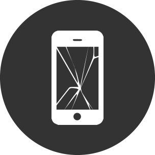
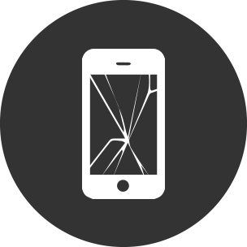
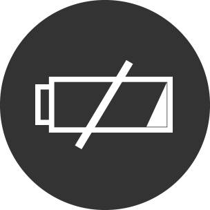
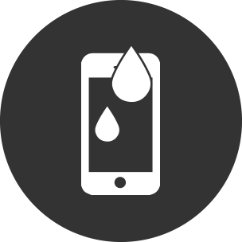

Reparación de Pantalla
Cambiamos y reparamos pantallas dañadas con repuestos originales y garantía incluida.
En iFix ofrecemos una amplia variedad de servicios de reparación para dispositivos Apple con repuestos originales y garantía.
Cambiamos y reparamos pantallas dañadas con repuestos originales y garantía incluida.
Restablece la autonomía de tu dispositivo con baterías originales certificadas.
Solucionamos daños por líquidos con equipos especializados para recuperar tu dispositivo.
Mejoramos el rendimiento de tu MacBook con limpieza interna, cambio de pasta térmica y optimización del sistema.